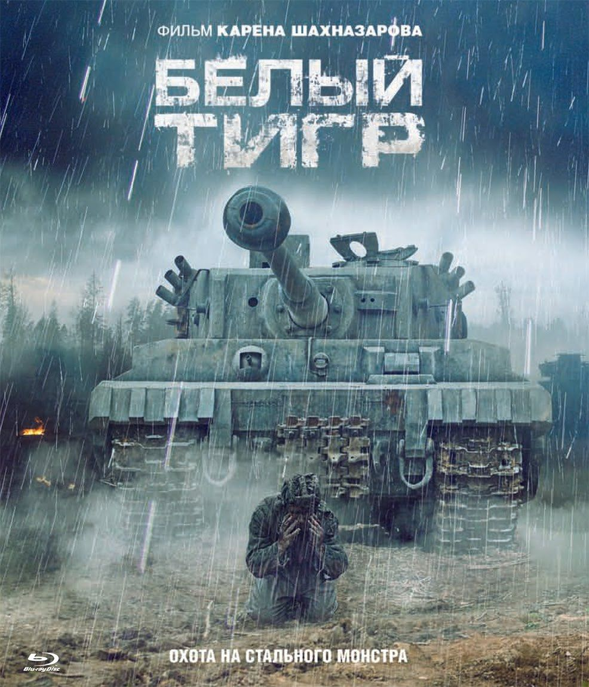

Белый Тигр
Описание фильма
Великая Отечественная война, лето 1943 года. На линии фронта ходят слухи о таинственном неуязвимом огромном немецком танке, который неожиданно появляется на полях сражений и так же неожиданно бесследно исчезает в дыму, успевая уничтожить целый советский танковый батальон. Это мистическое чудовище прозвали «Белым тигром». После одного из сражений в подбитом советском танке обнаруживают сильно обгоревшего, но живого человека — механика-водителя (Алексей Вертков). Несмотря на ожог 90 % поверхности тела и заражение крови, боец, к удивлению врачей, феноменально быстро идёт на поправку и возвращается в строй. Он не знает своего имени, не помнит прошлого, но обретает удивительную способность понимать «язык» танков, «слушать» их, как неких живых существ, наделённых разумом. Он уверен — неуловимый немецкий танк существует, и его необходимо уничтожить (это поручил ему сам «танковый бог»), потому что «Белый тигр» — это воплощение войны, её ужас и кровь. Ему выдают новые документы на имя Ивана Ивановича Найдёнова и повышают его в воинском звании. По пути в действующую армию танкист видит на платформе эшелона с разбитой техникой — два подбитых танка, Т-34 и Матильда. Подошедшим двум командирам он рассказывает, что ему сказали танки — «Матильда» была подбита «Пантерой», которая сидела в засаде, а Т-34 был сожжён «Белым тигром». Командиры считают танкиста сумасшедшим. Майор Федотов (Виталий Кищенко), заместитель начальника контрразведки танковой армии, получает от советского командования специально созданный экспериментальный средний танк Т-34 последней модификации — Т-34-85 (без номера, форсированный двигатель, усиленное бронирование, стабилизатор пушки), задание — сформировать для него экипаж, а также найти и уничтожить вражеский «Белый тигр». Командиром нового советского танка Федотов назначает Ивана Найдёнова и приказывает его экипажу выполнить порученное задание. Первая попытка завершается провалом: «Белый тигр», уйдя от трёх выстрелов танка-приманки (тоже Т-34-85) первым же своим выстрелом уничтожает его, а с танком Найдёнова играет, как кошка с мышью: загоняет его за гору сгоревшей техники, выпускает и, наконец, снисходительно щадит ювелирным выстрелом в левый край кормы, непостижимым образом оказавшись сзади. К счастью, весь экипаж Ивана остаётся целым. Также майор Федотов убеждается, что Найдёнов не смог бы выжить при таких обширных ожогах (90 % поверхности тела). Он, в прямом смысле слова, переродился, чтобы уничтожить «Белого тигра». Помимо этого, Найдёнова действительно предупреждают о выстреле «Тигра» как «танковый бог», так и сами танки. Как потом выразился Иван, «они хотят, чтобы он жил». В последнем боестолкновении танк Найдёнова в погоне за «Белым тигром», в одиночку сорвавшим до того советское наступление, попадает в заброшенную деревню, ликвидирует там замаскированный немецкий танк и вновь сталкивается со своим главным противником. На этот раз «Белый тигр» сильно повреждён, но не уничтожен. После боя он вновь скрывается, и его следов найти не удаётся. Весна 1945 года. После капитуляции Германии Федотов, уже в звании полковника, пытается убедить Найдёнова, что война закончилась, но тот не соглашается. Пока «Белый тигр» не уничтожен, война не закончится, — убеждён Найдёнов, — он готов ждать двадцать лет, пятьдесят, сто, но он обязательно появится вновь и нанесёт удар". Полковник Федотов отходит к своей машине и, обернувшись, видит на месте танка лишь небольшую дымку. В финальной сцене ужина в тёмном кабинете Адольф Гитлер оправдывается перед таинственным незнакомцем по поводу войны: А мы просто нашли мужество осуществить то, о чём мечтала Европа!… Разве мы не осуществили потаённую мечту каждого европейского обывателя? Они всегда не любили евреев! Всю жизнь они боялись эту мрачную, угрюмую страну на Востоке… Я сказал: просто давайте решим эти две проблемы, решим их раз и навсегда… Человечество стало тем, что оно есть, благодаря войне! Война — естественное, обыденное дело. Она идёт всегда и повсюду. Война не имеет начала или конца. Война — это сама жизнь. Война — это отправная точка».
Назад